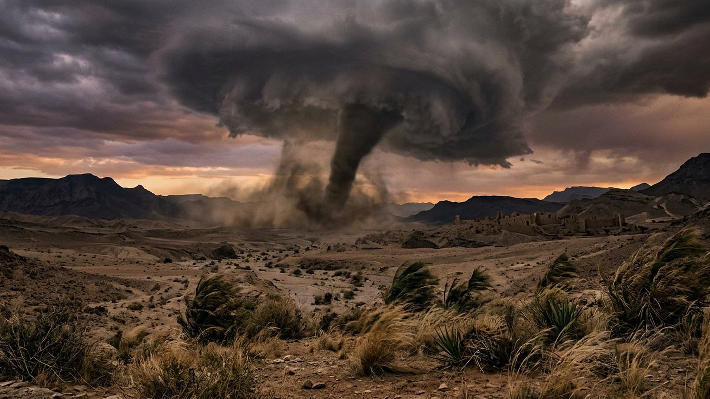
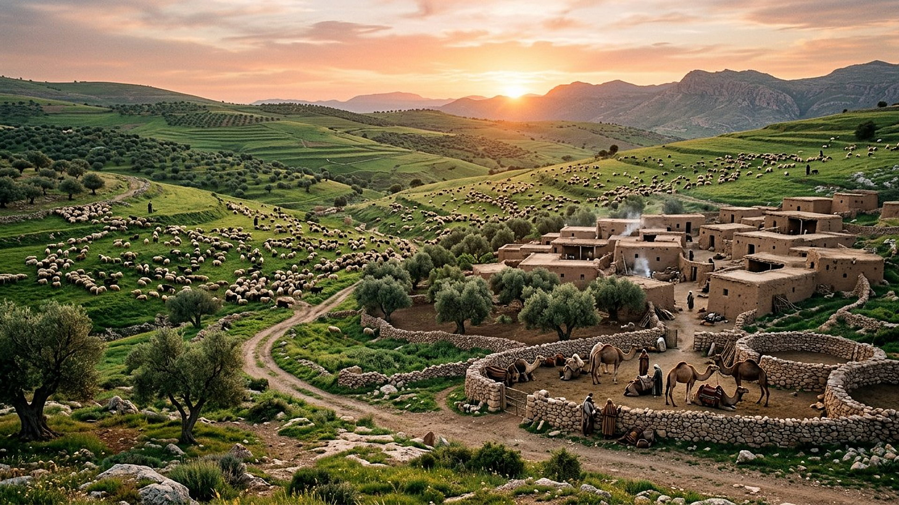
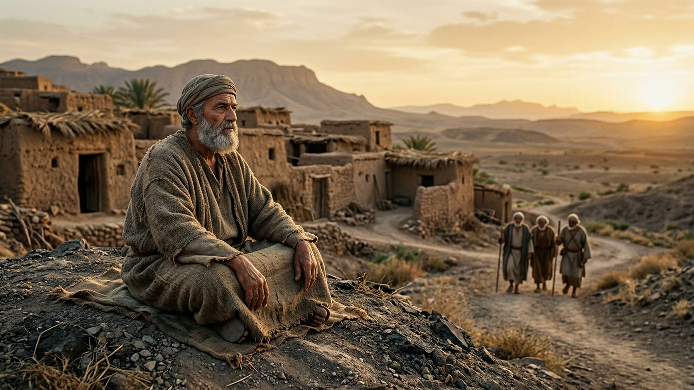

Salle 48 — Livre de Job ACCOMPLIE
Job : pourquoi le juste souffre-t-il ?
« Si un homme vient à mourir, revivra-t-il ? Tous les jours de ma corvée, j’attendrai, jusqu’à ce que vienne mon relèvement. Tu appelleras, et moi, je te répondrai. » — Job 14:14-15 (traduction personnelle fidèle)
Reconstitution numérique — la réponse vient « du milieu de l’ouragan » (Job 38:1) : aucun être n’est figuré dans la tempête.
La question que tout visiteur apporte avec lui
Au pays d’Uts (en hébreu, translittération : ʿÛṣ), Job est présenté comme un homme « intègre et droit, craignant Dieu et se détournant du mal », béni d’une grande famille et d’immenses troupeaux. En quelques jours, il perd biens, serviteurs, enfants, puis sa santé. Trois amis venus le consoler soutiennent l’explication de leur temps : la souffrance serait toujours le salaire d’une faute cachée. Job refuse ce calcul, proteste de son intégrité, réclame un procès équitable — et tient bon. À la fin, la réponse vient du milieu de l’ouragan : non pas un mode d’emploi de la souffrance, mais une série de questions qui replacent l’homme dans un univers qu’il ne gouverne pas (Job 1 à 42, résumé sobre).
Dans la lecture retenue par ce musée, le prologue céleste donne la clé du drame : l’Accusateur y soutient que la fidélité de Job est intéressée — « est-ce pour rien que Job craint Dieu ? » (Job 1:9). La question posée dépasse donc un seul homme : un humain peut-il rester loyal par amour, et non pour les bénéfices ? La souffrance de Job n’est pas présentée comme une punition ; elle est le terrain d’une réponse libre. L’historicité du personnage et la rédaction du livre sont exposées ci-dessous avec les débats, sans les dissimuler.
Le récit en cinq temps
De la prospérité à la restauration, avancez d’une station à l’autre.

Le banc des preuves : un manuscrit ancien, une question universelle
DÉBATTU
Le Targum de Job de Qumrân (11Q10) : le livre circulait déjà (EV-57)
Dans la grotte 11 de Qumrân a été retrouvé un rouleau portant une version araméenne (un targum) du livre de Job, désigné par les spécialistes sous le sigle 11Q10 et conservé dans les collections publiques de Jérusalem. Il atteste que le livre de Job était lu, copié et traduit bien avant l’époque des plus anciens manuscrits hébreux médiévaux. Débattu : la date de rédaction du livre lui-même (les propositions s’échelonnent sur plusieurs siècles), son cadre — récit historique, parabole de sagesse ou les deux — et l’identité du pays d’Uts, que le texte ne localise pas avec précision.
LECTURE PROPHÉTIQUE
« Tu appelleras, et je te répondrai » : l’espérance de Job
Au plus sombre du dialogue, Job formule une espérance que le musée relie à la salle 39 : « si un homme vient à mourir, revivra-t-il ? […] Tu appelleras, et moi, je te répondrai ; tu languiras après l’ouvrage de tes mains » (Job 14:14-15). Il dit aussi : « je sais que mon Défenseur est vivant » (Job 19:25, traduction personnelle). La réponse à la souffrance, dans cette lecture, n’est pas une explication complète : c’est une résurrection attendue et un Juge qui connaît le dossier.
DÉBATTU
Le « juste souffrant », un débat plus vieux que le livre
Job n’est pas le premier texte du Proche-Orient ancien à interroger le ciel : un poème akkadien connu par sa première ligne translittérée « Ludlul bēl nēmeqi » (« je louerai le dieu de sagesse ») fait déjà dialoguer un notable frappé sans cause connue et son dieu. Les spécialistes débattent des parentés de genre entre ces œuvres. Ce qui distingue Job dans le canon biblique : les discours des amis y sont réfutés par la conclusion elle-même, et le héros n’apprend jamais le prologue céleste — le lecteur en sait plus que lui, c’est le ressort du livre.
Quatre clés pour bien lire le livre de Job
1. La souffrance n’est pas un relevé de fautes
Le prologue l’établit avant tout dialogue : Job souffre parce qu’il est intègre, non l’inverse. La théorie de la rétribution automatique — défendue par les trois amis — est explicitement désavouée à la fin (« vous n’avez pas parlé de moi avec droiture, comme mon serviteur Job », 42:7) : le livre interdit de lire le malheur d’autrui comme un verdict sur sa vie.
2. L’enjeu : une loyauté désintéressée
« Est-ce pour rien que Job craint Dieu ? » (1:9) : la question de l’Accusateur vise tous les humains. En restant fidèle sans bénéfice et sans explication, Job y répond en actes. Dans la lecture du musée, c’est le cœur du livre — devant la cour céleste, l’intégrité humaine n’est pas un mécanisme, c’est un choix renouvelé chaque jour d’épreuve.
3. Une réponse qui élargit au lieu d’expliquer
Depuis l’ouragan, Jéhovah ne dévoile ni le prologue ni un motif : il interroge Job sur la fondation de la terre, la mer, les constellations et les bêtes sauvages (Job 38 à 41, résumé sobre). Job répond : « je sais que tu peux tout » (42:2). Le livre assume qu’une créature ne reçoit pas le dossier complet — et que la confiance peut tenir sans lui.
4. La protestation honnête n’est pas une révolte
Job maudit le jour de sa naissance, exige un arbitre, puis se rétracte sur ses paroles — mais Jéhovah déclare qu’il a parlé « avec droiture », contrairement aux amis pieux et faux. Le livre protège donc la plainte sincère : douter à voix haute devant Dieu n’y est pas condamné ; y est condamnée la théologie qui accuse les éprouvés pour se rassurer.
Prescience n’est pas fatalité — une intégrité qui se choisit
L’Accusateur prédit que Job, touché dans ses biens puis dans sa chair, reniera. La prédiction échoue : jour après jour, Job choisit de ne pas charger Dieu d’injustice, sans qu’aucun script ne l’y oblige. La prescience connaît le cœur ; elle ne remplace pas le choix — ici, c’est même le sujet du livre.

Salle 39 : l’espérance de Job 14, la résurrection · Salle 47 : l’alliance à laquelle Job aurait pu se croire abandonné · Salle 43 : l’épreuve et le choix final
Écouter la salle
Transcription de la narration
Bienvenue dans cette salle du musée. Vous allez découvrir un vaste paysage de troupeaux dans des collines verdoyantes à l’aube, un homme âgé assis dignement devant des maisons de terre, puis un ouragan sombre au-dessus d’une vallée désertique. Bonne visite. La visite avance en cinq étapes courtes. Prenez le temps d’observer chaque image et de lire les panneaux : ils présentent une grande question, un manuscrit ancien conservé à Jérusalem, et les débats des spécialistes. Merci de votre attention.